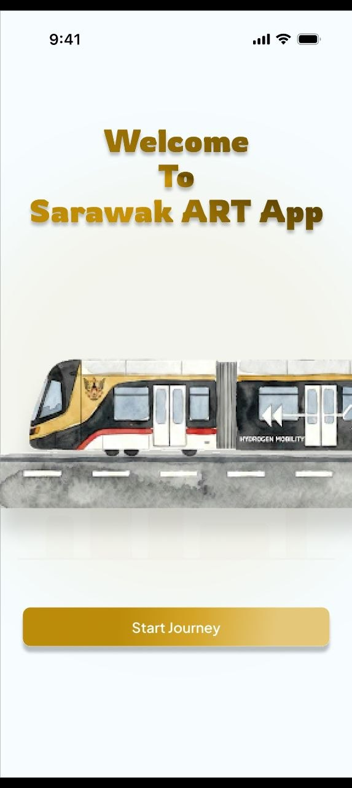
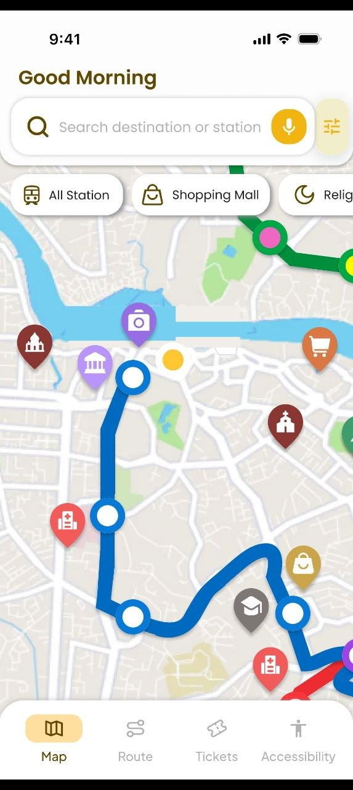
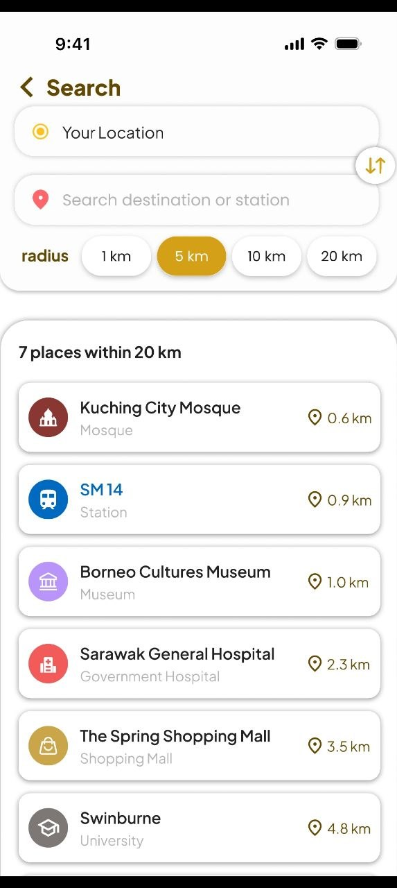
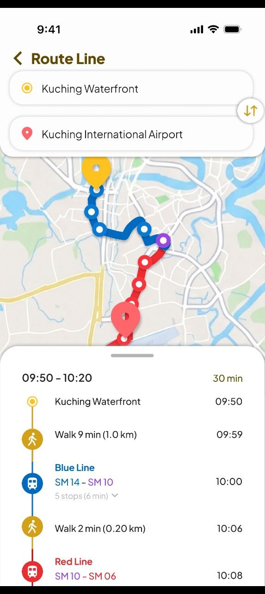
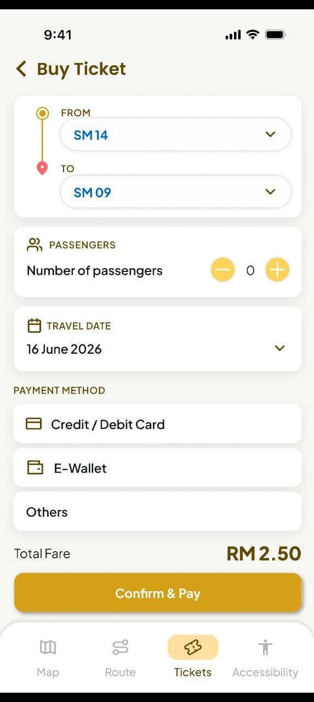

ART KUTS

Welcome Screen — Introduction to the Sarawak ART app.

Map Screen — Shows ART routes and nearby places.

Search Screen — Finds places within a selected distance.

Route Screen — Displays a suggested route between locations.

Ticket Screen — Shows trip details and payment options.